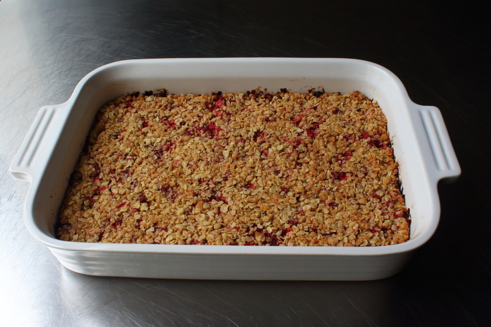

Strawberry Oatmeal Breakfast Bars

Description
I'm always on the lookout for easy and delicious things to make for breakfast that are on the one hand, relatively healthy and good for you, while on the other hand, not too good for you. I think these really do fit the bill.
These are normally made with strawberry preserves, but here we're using fresh strawberries for a little lighter and lower-sugar approach. For best results, refrigerate before serving.
Ingredients
- 1 pound of strawberries
- 1/2 lemon, juiced
- 2 tablespoons white sugar
- 2 teaspoons cornstarch
- 1 1/2 cups old-fashioned rolled oats
- 1/2 cup all-purpose flour
- 1/2 cup whole wheat flour
- 1/2 cup packed light brown sugar
- 1/2 teaspoon kosher salt
Steps
- Preheat the oven to 375F
- Remove the green tops of the strawberries. Cut them in half. Slice each lengthwise 3 to 5 times before turning and cutting across in a dice.
- Combine diced strawberries, lemon juice, sugar and cornstarch and mix thoroughly.
- Combine oats, flours, brown sugar, salt in a mixing bowl.
- Transfer 60% of the oatmeal mixture in a baking dish and spread out
- Place strawberries on top. Top with remaining oatmeal. Drizzle juices on top.
- Bake in the preheated oven.